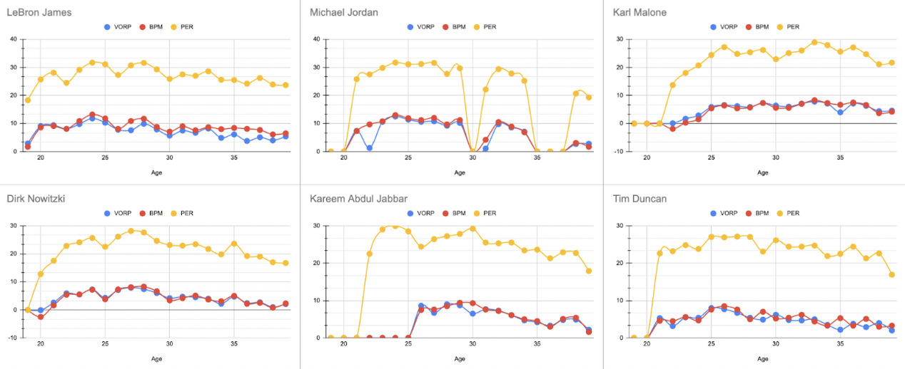

Aging Like Fine Wine
By Gabriel Adorable | December 10, 2024

In the sports world, age is the great equalizer. No matter who it is, coming of age diminishes athletes' speed, power, and health, causing regression in both athleticism and production. This regression becomes even sharper as athletes approach the tail end of their careers. In the NBA, most players start their statistical decline in their mid-thirties, with a sharp drop-off in their late thirties. In the modern NBA, there is one outlier to this rule, LeBron James. At age 39, LeBron James continues to play at an All-NBA level as one of the league’s perennial players. How can we measure this sustained production? Through statistics.
Statistics Used
The statistics being used to quantify production relative to time are VORP, BPM, and PER.
- VORP (Value Over Replacement Player)
- Estimates how valuable a player is compared to a “replacement” player
- 0 represents the play of an average player
- High VORP means their play is much better than average
- Negative VORP means much worse
- Takes into account all contributions across the stat sheet
- BPM (Box Plus Minus)
- Estimates a player’s contribution to the point differential per 100 possessions
- Better encompasses both offensive and defensive contributions
- Positive means the player contributes positively to the team’s score
- Negative means they are less effective
-
The team falls behind when they play
- PER (Player Efficiency Rating)
- Represents a per-minute rating of a player’s productivity
- The league average is 15
- Offensive-focused
- Takes into account all stats
- High PER means a player is highly effective on the court
- Represents a per-minute rating of a player’s productivity
Data
To start, LeBron started much earlier than the other long-lasting NBA players because he had gone to the NBA straight from high school. The other players started at anywhere from 20 to 22, while he started at 18. All of these players shortly retired after their age 39 seasons and those who didn’t had statistically insignificant seasons compared to the rest of their careers.
Michael Jordan famously retired twice before coming back to play for the Wizards, which explains the gaps in his data. Kareem's BPM and VORP were not measured in his early years, but we can still analyze his statistical decline regardless.
From the Data:
Michael Jordan: Ups and Downs
Having a career defined by 2 separate three-peats, MJ stands out as one of the greatest, if not the greatest basketball players of all time. However, his career trajectory differed from the average NBA player. Two separate retirements significantly disrupted his statistical contributions throughout his career. His comeback with the Washington Wizards saw a steep decline in his production across all statistical measures, a stark contrast from his career dominance.
Dirk Nowitzki: Below Average to Franchise-Defining Star
Hailing from Germany and possessing a hall-of-fame fadeaway, Dirk defined what it meant to be a stretch big. His career was much different than the rest of the pack. Dirk started with a negative VORP (worse than replacement player) but gradually blossomed into the Hall of Fame stretch four we know him as today. Similar to everyone else, age got the better of him, with his latter years being closer to league average at best.
Kareem Abdul-Jabbar: Peak -> Steep Decline
Previously known as Lew Alcindor, Mr. Abdul-Jabbar enjoyed perhaps one of the greatest statistical peaks out of everyone with a PER that was figuratively and literally off the charts. The dominance of his post-game and skyhook propelled him into all-time great status and the most points in a career before a certain kid from Akron came along. His latter years with the Lakers, however, show a sharp decline from his Bucks days, which shows how (with most) Father Time remains an undefeated champion.
Tim Duncan: Quiet Yet Efficient
Although possessing one of the more “boring” skillsets out of the bunch, the Virgin Islands native’s game did not lack effectiveness and efficiency. Duncan’s simple, yet effective style of play allowed him to enjoy sustained excellence into his latter years, but the magical number of age 39 saw a drop off in both production and efficiency which prompted him to hang up the sneakers.
Karl Malone: The Dark Horse
Lacking the ring(s) of his counterparts, Karl Malone often goes overlooked in terms of greatness and longevity. Similar to Dirk, he started his career with below-average production, but quickly became an all-time great scorer. With the often glossed-over Stockton to Malone connection, Karl amassed the 3rd most points in a career. Similar to LeBron, he sustained his production across most of his career until his final year with the Lakers (often forgotten) where he experienced a decline. No matter what you think of him off the court, the scoring greatness is there.
LeBron James: The Outlier
The kid from Akron, the Chosen One, the King, what more is there to say? Throughout his career, James has only experienced minor reductions in output, but all three statistics (VORP, PER, and BPM) have remained relatively constant during his tenure in the NBA. As the other players got older, they shifted into auxiliary roles. LeBron however, has remained a 1st option throughout his entire career, adding another layer of excellence to his longevity. Over 21 seasons, LeBron has adapted his game to better suit his age, from explosivity and power to IQ and finesse. Being the only one out of the bunch to avoid an age 39 dropoff, the King remains on the top of the mountain of longevity.
Takeaways
This analysis highlights LeBron James as a unique case in terms of longevity and production among NBA players, even compared to other legends. While players like Michael Jordan, Karl Malone, Dirk Nowitzki, Kareem Abdul-Jabbar, and Tim Duncan maintained high levels of play well into their late thirties, all of them experienced a notable statistical decline as they neared or passed the age of 39. This decline is shown across key metrics like VORP, BPM, and PER, where even the best struggle to maintain consistent productivity due to the toll age takes on athletic performance, speed, and health.
LeBron stands out for his ability to maintain stability in all three metrics despite his age, with only minor declines in efficiency and effectiveness. Unlike others, who faced steep drop-offs in their final seasons, LeBron continues to post a VORP above 5—something unprecedented for players at his age, emphasizing his high-level play. His BPM and PER remain impressive as well, signaling that he positively impacts the game whenever he’s on the floor.
Overall, LeBron's sustained production and perennial play show how much of an outlier of a player he is. His unrivaled longevity shows what it means to “age like fine wine” in sports.
Sources
https://www.basketball-reference.com/players/a/abdulka01.html